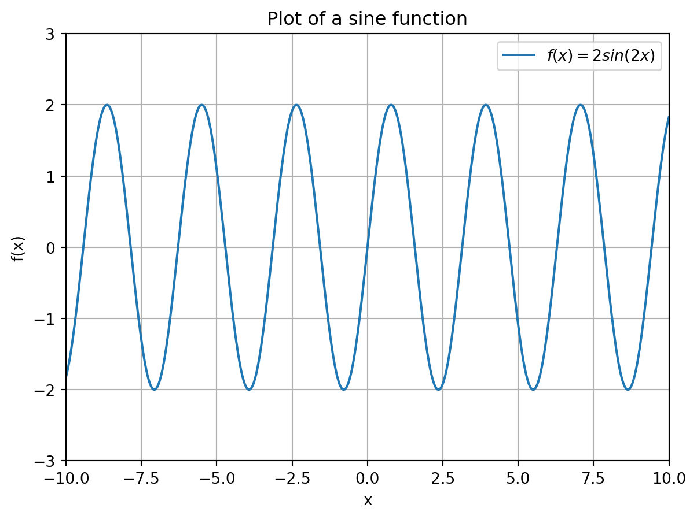

def roots(a,b,c):
x_l = (-b - (b**2 - 4*a*c)**(0.5))/(2*a)
x_r = (-b + (b**2 - 4*a*c)**(0.5))/(2*a)
return [x_l, x_r]
roots(1,2,-1)[-2.414213562373095, 0.41421356237309515]
Write a function roots(a,b,c) that takes as input three numbers a,b and c and outputs a list with as two elements the roots
x_\ell = \frac{- b - \sqrt{b^2 - 4ac}}{2a} \ \ \text{ and } \ \ x_r = \frac{- b + \sqrt{b^2 - 4ac}}{2a}
of the quadratic function f(x) = ax^2 + bx + c. As an example, the command roots(1,2,-1) should return [-2.414213562373095, 0.41421356237309515].
def roots(a,b,c):
x_l = (-b - (b**2 - 4*a*c)**(0.5))/(2*a)
x_r = (-b + (b**2 - 4*a*c)**(0.5))/(2*a)
return [x_l, x_r]
roots(1,2,-1)[-2.414213562373095, 0.41421356237309515]Write a function called maximum() that takes as input a mathematical function f : \mathbb{R} \rightarrow \mathbb{R} and an initial guess guess. It should output an x that maximizes the function f. Your function should make use of fmin() with initial guess guess.
Hint: An x maximizes the function f(x) if and only if it minimizes the function -f(x).
import scipy.optimize as optimize
def maximum(f,guess):
#Define the function g, which is -f
def g(x):
return -f(x)
#Compute the minimum of the function g, i.e., the maximum of f
x = optimize.fmin(g,guess)
return xDefine the function f(x) = -x^2 - 3x + 1 as a Python function and test your function maximum() on it with initial guess guess = 10. The maximum should be attained at x = -1.5.
def f(x):
return -x**2 - 3*x + 1
guess = 10
x = maximum(f,guess)
print('The maximum of the function f is attained at x = ', x)Optimization terminated successfully.
Current function value: -3.250000
Iterations: 21
Function evaluations: 42
The maximum of the function f is attained at x = [-1.5]In this exercise, we will plot a sine function and try to find all the roots that it has.
np.sin(y).import numpy as np
import matplotlib.pyplot as plt
# Define the function f
def f(x):
return 2*np.sin(2*x)
# Define the x range of x-values
x = np.linspace(-10,10,600)
# Compute the function values f(x[i]) of the elements x[i]
# and store them in the array y
y = f(x)
#Create the figure
plt.figure()
# Create the plot
plt.plot(x, y, label='$f(x) = 2sin(2x)$')
# Create a grid
plt.grid()
# Create range for axes
plt.xlim(-10,10)
plt.ylim(-3,3)
# Create legend, axes labels and title
plt.xlabel('x')
plt.ylabel('f(x)')
plt.title('Plot of a sine function')
plt.legend()
The function f has many roots, i.e., x-values that satisfy 2\sin(2x) = 0, on the interval [-10,10]. We will try to find all of them and indicate them in the figure of part a).
np.linspace()a = -10
b = 10
k = 41
guess = np.linspace(-10,10,41)
print(guess)[-10. -9.5 -9. -8.5 -8. -7.5 -7. -6.5 -6. -5.5 -5. -4.5
-4. -3.5 -3. -2.5 -2. -1.5 -1. -0.5 0. 0.5 1. 1.5
2. 2.5 3. 3.5 4. 4.5 5. 5.5 6. 6.5 7. 7.5
8. 8.5 9. 9.5 10. ]guess the function fsolve() with the chosen guess. The roots that are found should be stored in a list called roots.Hint: Define an empty list roots = [] and append the found roots to it. The output should be
[-9.424777960769301, -9.42477796076938, -9.42477796076938, -9.42477796076938, -7.853981633974483, -7.853981633974483, -3.141592653589793, -6.283185307179586, -6.283185307179586, -513.6503988619313, -4.71238898038469, -4.71238898038469, -14.137166941154069, -3.141592653589793, -3.141592653589793, -3.141592653589793, -1.5707963267948966, -1.5707963267948966, -1.5707963267948966, 0.0, 0.0, 0.0, 1.5707963267948966, 1.5707963267948966, 1.5707963267948966, 3.141592653589793, 3.141592653589793, 3.141592653589793, 14.137166941154069, 4.71238898038469, 4.71238898038469, 782.2565707438586, 6.283185307179586, 6.283185307179586, 3.141592653589793, 7.853981633974483, 7.853981633974483, 9.42477796076938, 9.42477796076938, 9.42477796076938, 9.424777960769301]
It is important to observe that different roots of f might be found depending on the intitial guess chosen for fsolve(). You can also see that sometimes for different guesses the same root is found; you could reduce this list to only include the unique elements (using np.unique()) but you don’t have to worry about this for now.
roots = []
for i in guess:
f_zero = optimize.fsolve(f,i)[0]
roots.append(f_zero)
print(roots) [np.float64(-9.424777960769301), np.float64(-9.42477796076938), np.float64(-9.42477796076938), np.float64(-9.42477796076938), np.float64(-7.853981633974483), np.float64(-7.853981633974483), np.float64(-3.141592653589793), np.float64(-6.283185307179586), np.float64(-6.283185307179586), np.float64(-513.6503988619313), np.float64(-4.71238898038469), np.float64(-4.71238898038469), np.float64(-14.137166941154069), np.float64(-3.141592653589793), np.float64(-3.141592653589793), np.float64(-3.141592653589793), np.float64(-1.5707963267948966), np.float64(-1.5707963267948966), np.float64(-1.5707963267948966), np.float64(0.0), np.float64(0.0), np.float64(0.0), np.float64(1.5707963267948966), np.float64(1.5707963267948966), np.float64(1.5707963267948966), np.float64(3.141592653589793), np.float64(3.141592653589793), np.float64(3.141592653589793), np.float64(14.137166941154069), np.float64(4.71238898038469), np.float64(4.71238898038469), np.float64(782.2565707438586), np.float64(6.283185307179586), np.float64(6.283185307179586), np.float64(3.141592653589793), np.float64(7.853981633974483), np.float64(7.853981633974483), np.float64(9.42477796076938), np.float64(9.42477796076938), np.float64(9.42477796076938), np.float64(9.424777960769301)]Next we will plot the roots in the figure of part a) as points.
roots (i.e., the length of roots) Hint: You can do this with a for-loop or you might have a look at thezeros() function from Numpy yourself.
# Determine the length of the vector roots
k = len(roots)
zeros = []
for i in range(k):
zeros.append(0)
print(zeros)
# You can create this vector directly with np.zeros(k)[0, 0, 0, 0, 0, 0, 0, 0, 0, 0, 0, 0, 0, 0, 0, 0, 0, 0, 0, 0, 0, 0, 0, 0, 0, 0, 0, 0, 0, 0, 0, 0, 0, 0, 0, 0, 0, 0, 0, 0, 0]roots and zeros against each other using a scatter plot (so that the combinations appear as points) in the figure generated in part a). Make the necessary adjustments so that the output looks like the figure below.
import numpy as np
import matplotlib.pyplot as plt
# Define the function f
def f(x):
return 2*np.sin(2*x)
# Define the x range of x-values
x = np.linspace(-10,10,600)
# Compute the function values f(x[i]) of the elements x[i]
# and store them in the array y
y = f(x)
#Create the figure
plt.figure()
# Create the plot
plt.plot(x, y, label='$f(x) = 2sin(2x)$')
# Create a grid
plt.grid()
# Create range for axes
plt.xlim(-10,10)
plt.ylim(-3,3)
# Create legend, axes labels and title
plt.xlabel('x')
plt.ylabel('f(x)')
plt.title('Plot of a sine function with its roots')
# Plot the roots
plt.scatter(roots,zeros,label='Zeros of f')
# Plot the legend with the labels
plt.legend()Create a similar figure as in Question 3, but now with the minima indicated in the figure instead of the roots of f. Your figure should look like this.

import numpy as np
import matplotlib.pyplot as plt
import scipy.optimize as optimize
# Define the function f
def f(x):
return 2*np.sin(2*x)
# Define the x range of x-values
x = np.linspace(-10,10,600)
# Compute the function values f(x[i]) of the elements x[i]
# and store them in the array y
y = f(x)
#Create the figure
plt.figure()
# Create the plot
plt.plot(x, y, label='$f(x) = 2sin(2x)$')
# Create a grid
plt.grid()
# Create range for axes
plt.xlim(-10,10)
plt.ylim(-3,3)
# Create legend, axes labels and title
plt.xlabel('x')
plt.ylabel('f(x)')
plt.title('Plot of a sine function with its minima')
a = -10
b = 10
k = 41
guess = np.linspace(a,b,k)
# Compute the minima for different initial guesses
minima = []
for i in guess:
f_min = optimize.fmin(f,i,disp=False)[0]
minima.append(f_min)
# Compute function values in minima
# We first turn the list minima into an array, so that
# we can compute all function values at once (recall that this doesn't
# work if we input a list, as explained in the lecture notes)
minima = np.array([minima])
y_minima = f(minima)
# Alternatively, you could compute all the function values above with a for-loop
# directly from the list minima (but this takes more coding)
# Scatter the minima as points in the figure
plt.scatter(minima,y_minima,label='Minima of f')
# Create the legend
plt.legend()Combining all the previous questions, create one figure that contains all the roots (as red points), minima (as green points) and maxima (as yellow points) of the function f. Your figure should look like this:

Hint: To create the different colors, you can use the argument c='[color]' of plt.scatter() with [color] replaced by the desired color name.
import numpy as np
import matplotlib.pyplot as plt
import scipy.optimize as optimize
# Define the function f
def f(x):
return 2*np.sin(2*x)
def maximum(x):
return -f(x)
# Define the x range of x-values
x = np.linspace(-10,10,600)
# Compute the function values f(x[i]) of the elements x[i]
# and store them in the array y
y = f(x)
#Create the figure
plt.figure()
# Create the plot
plt.plot(x, y, label='$f(x) = 2sin(2x)$')
# Create a grid
plt.grid()
# Create range for axes
plt.xlim(-10,10)
plt.ylim(-3,5)
# Create legend, axes labels and title
plt.xlabel('x')
plt.ylabel('f(x)')
plt.title('Plot of a sine function')
a = -10
b = 10
k = 41
guess = np.linspace(a,b,k)
### Computing the roots, minima, and maxima
roots = []
minima = []
maxima = []
for i in guess:
f_zero = optimize.fsolve(f,i)[0]
roots.append(f_zero)
f_min = optimize.fmin(f,i,disp=False)[0]
minima.append(f_min)
f_min = optimize.fmin(maximum,i,disp=False)[0]
maxima.append(f_min)
# Scatter the roots as points in the figure
zeros = np.zeros(len(roots))
plt.scatter(roots,zeros,label='Roots of f',c='red')
# Scatter the minima as points in the figure
minima = np.array([minima])
y_minima = f(minima)
plt.scatter(minima,y_minima,label='Minima of f',c='green')
# Scatter the maxima as points in the figure
maxima = np.array([maxima])
y_maxima = f(maxima)
plt.scatter(maxima,y_maxima,label='Maxima of f',c='yellow')
# Create the legend
plt.legend()